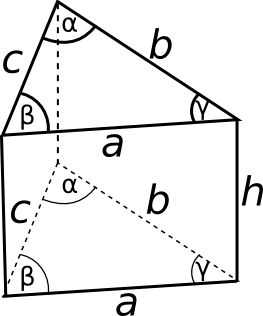
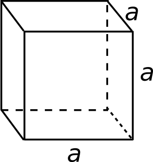

 Püstprismaks nimetatakse prismat, mille külgservad on põhjadega risti. Püstprisma
külgtahkudeks on ristkülikud.Korrapäraseks püstprismaks nimetatakse
püstprismat, mille põhjadeks on korrapärased hulknurgad.
Püstprisma omadused:
pindala võrdub külgede pindalade summaga
ruumala võrdub põhja pindala ja kõrguse korrutisega